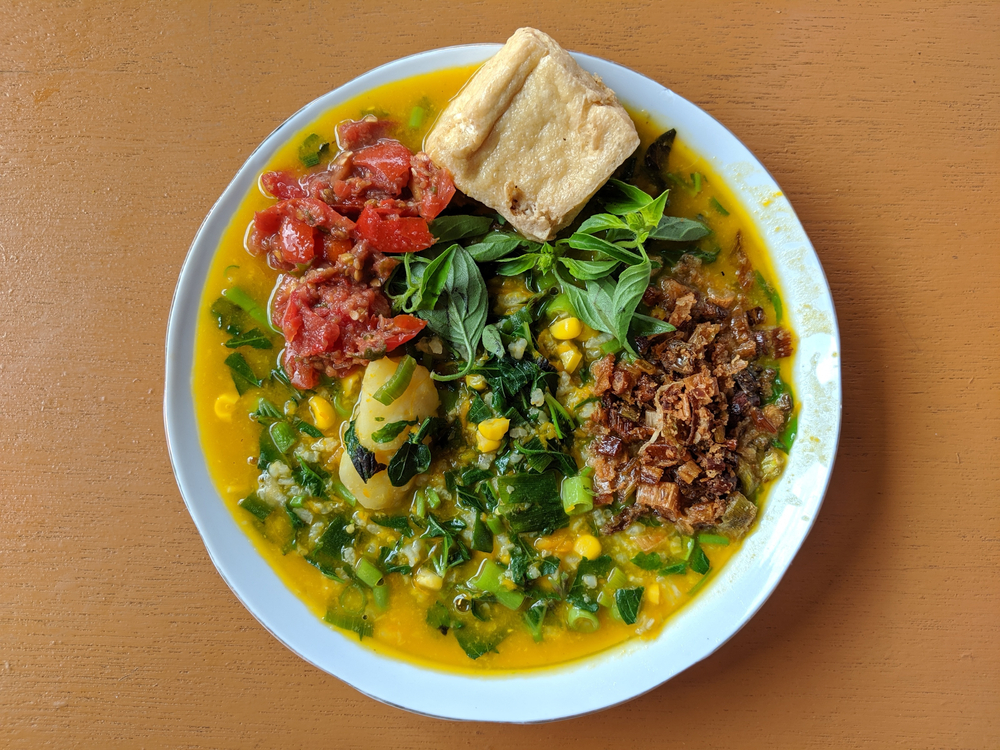
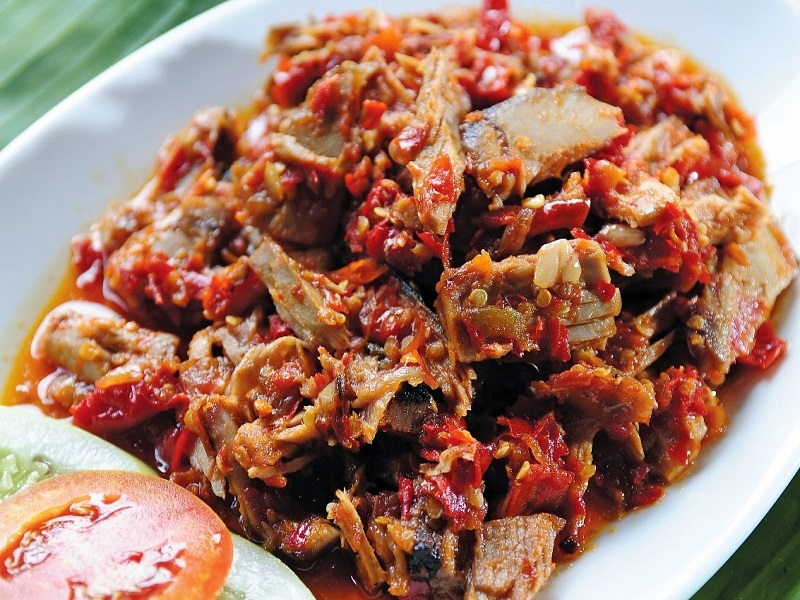

Tinutuan
Bubur khas Manado yang sehat dan kaya sayur
Nikmati ragam kuliner khas Manado yang kaya rasa, pedas, dan menggoda selera.

Bubur khas Manado yang sehat dan kaya sayur

Ikan asap dengan bumbu rica pedas khas Manado

Sambal khas Manado dari ikan roa asap yang pedas gurih